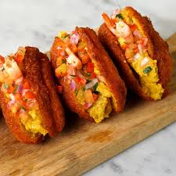

Acarajé
Imagem: Wikimedia Commons
Bolinho de feijão-fradinho frito no azeite de dendê, recheado com vatapá, camarão seco e salada. É típico da Bahia.
Imagem: Wikimedia Commons
Bolinho de feijão-fradinho frito no azeite de dendê, recheado com vatapá, camarão seco e salada. É típico da Bahia.

Imagem: Wikimedia Commons
Mistura de arroz, feijão-verde ou feijão-macassa, queijo coalho, carne seca e outros ingredientes. Muito popular em todo o Nordeste.

Imagem: Wikimedia Commons
Prato feito com peixe, leite de coco, azeite de dendê, pimentão e temperos. Tradicional da Bahia.